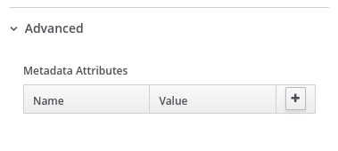
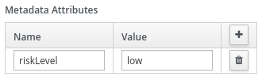
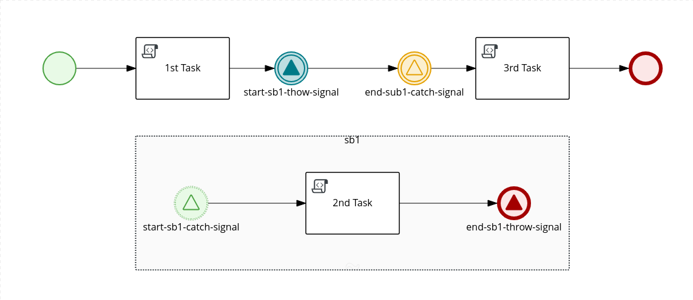
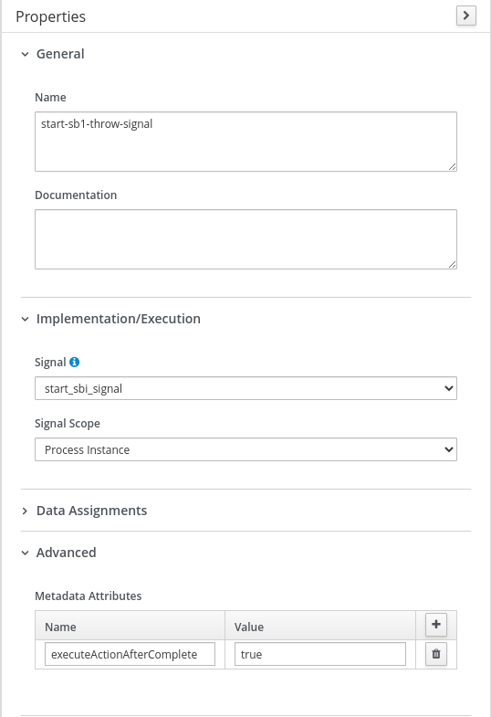

BPMN and Metadata – Leveraging app capabilities
Introducing Metadata
As much as we aim to empower users with a versatile, easy-to-use tool, sometimes that isn’t enough. Most solutions require specific data or interactions that are hard to provide out-of-the-box. The BPMN2.0 specification already covers those situations in more than one way, now so does the BPMN Editor. After our latest release (Business Central v7.12 and Kogito v0.12.0), adding custom data to all BPMN nodes is possible through the metadata field. You can find it under the node property tab in the advanced category.

Using Metadata
Although not required, this feature alongside a listener is the most common use case. In a hypothetical scenario, the user could add audit/logging data, combine it with a process listener, and create a custom audit/logging strategy based on node-provided information. In another, author information can be used to support document creation or for any other regulatory purpose.
Simple BPMN and Metadata
The following example shows a custom event listener using custom metadata to start a process:

Metadata attribute in the BPMN file
<bpmn2:process id="test" drools:packageName="com.example" drools:version="1.0" name="test" isExecutable="true" processType="Public">
<bpmn2:extensionElements>
<drools:metaData name="riskLevel">
<drools:metaValue><![CDATA[low]]></drools:metaValue>
</drools:metaData>
</bpmn2:extensionElements>
</bpmn2:process>
Event listener using metadata
public class MyListener implements ProcessEventListener {
...
@Override
public void beforeProcessStarted(ProcessStartedEvent event) {
Map < String, Object > metadata = event.getProcessInstance().getProcess().getMetaData();
if (metadata.containsKey("low")) {
// Implement some action for that metadata attribute
}
}
}
Going deep with BPMN and Metadata
Here, in a more in-depth example, the jBPM engine uses metadata to control process flow:

Nothing too fancy here. Just a simple process with two distinct flows. The main flow, containing two tasks (1st Task and 3rd Task) and a secondary flow with a single task (2nd Task) inside a sub-process (sb1). They are simple and only print out their names. The node start-sb1-throw-signal emits a signal listened to by start-sb1-catch-signal. The node end-sub1-catch-signal listens for the signal emitted by end-sb1-throw-signal.
Without a doubt, this is a basic diagram. The expected output for its execution follows 1st Task, 2nd Task, 3rd Task. But in reality, what we get is 1st Task, 2nd Task. In a closer inspection, we can see the flow never completes and stops at end-sub1-catch-signal. The reason for that is not fundamental for this post, so we are not going to dive into the details. But basically, the signal listened by end-sub1-catch-signal is emitted before the node setup, losing it and halting the execution.
To work around that, jBPM uses the executeActionAfterComplete flag, which allows the flow to move on to the next element before doing any other actions. So for our diagram, all we need is to add new metadata with executeActionAfterComplete as name and True as a value in the start-sb1-throw-signal node. This way, the flow proceeds to the next node (end-sub-catch-signal) before signaling and reaches the end without trouble.

The possibilities are endless. We hope this feature helps you take your application to the next level. That is all for today. Stay tuned for more jBPM features!